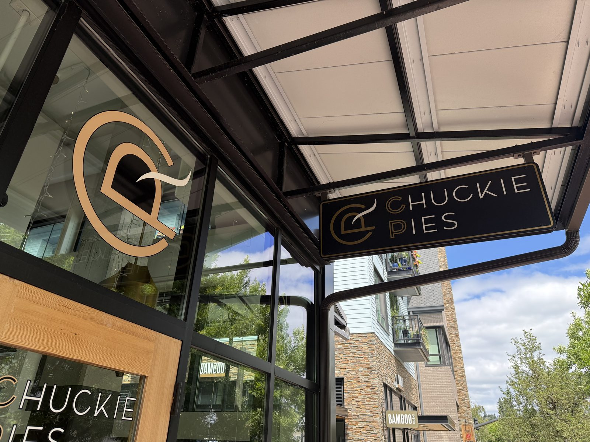
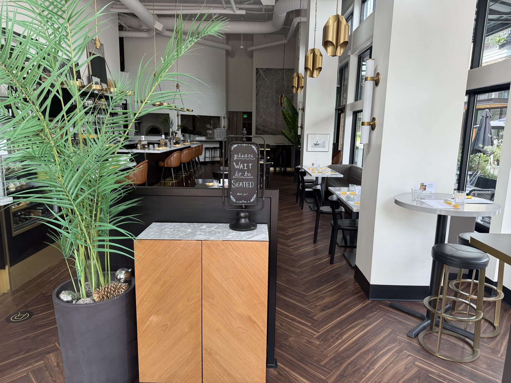
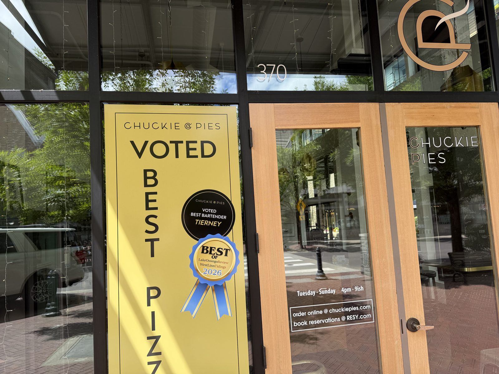

Places spotted, recommended, or walked past with a window worth a second look — turned down like a page, to come back to. No stars yet, because there's no meal to score. When one of these actually gets eaten, it graduates into a real entry.
Neapolitan-style pies, walked past midday on a Sunday food crawl — it doesn't open until 4pm, so that was that. The window had two things taped to it worth remembering: The Oregonian's 2026 Reader's Choice, voted a top-3 pizza spot in Portland, and a local ribbon for Best Pizza from the Lake Oswego Review. Going back on purpose, at the right hour this time.


